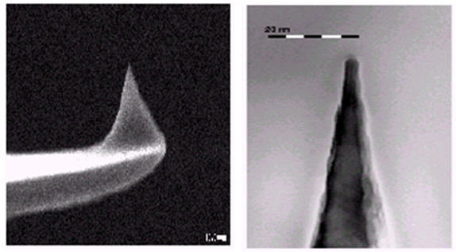

| English |
Crygenic Cathodoluminescence system
Prof. Wu-Ching Chou’s Low temperature (10K-300K) cathodo-luminescence (CL) system include a JEOL 7001 scanning electron microscope (SEM) and two spectrometers, which can analyze the CL spectrum from infrared (3 μm) to ultra-violet (200 nm). This CL intrument can be used to study the photonic properties of nano-structured semiconductors. Reference: Nanotechnology 21, 465701 (2010)
Electron beam: Field emission
Acceleration voltage: 0.5 to 30 kV
Magnification: 25-200,000
Sample size: 15x15x10(W/D/H, nm)
Resolution: 1.5nm (15kV)、3.0nm ( 1 kV)
photo-luminescence (PL) spectru：
Prof. Wu-Ching Chou’s laboratory of optical spectroscopy has several spectrometers, which were used to analyze the spectrum from infrared (2 μm) to ultra-violet (300 nm). He-Cd laser and Ar ion laser were used to excite the photo-luminescence (PL) spectrum. Raman scattering, reflectance, and transmission experiments were also used to investigate the optical properties of photonic semiconductors. Furthermore, pulsed laser diodes were used to excite the time resolved PL spectrum for the study of electron and hole recombination dynamics.
NT - MDT P47 Scanning Probe Microscopy
Using AFM or STM to measure the surface morphology, Adhesion force, capacitance and etc.
 （Left Picture）
Z - resolution
~1 nm
Other facilities
PL Measurement system, Time-Resolved-PL System, Micro-Raman System, High-Pressure Raman System